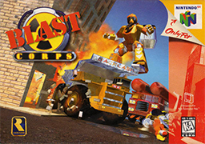
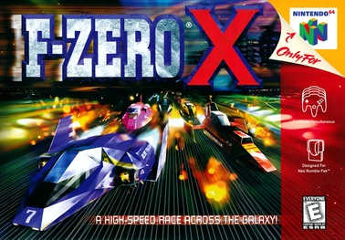
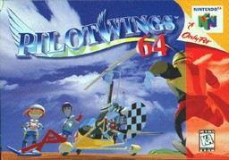
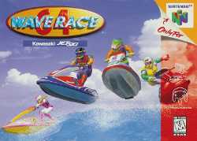
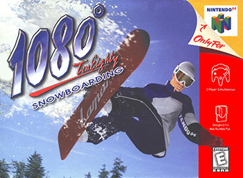
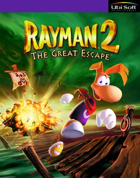
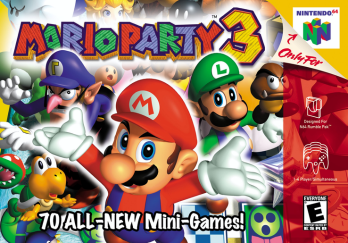
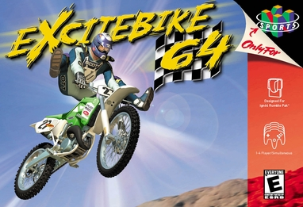
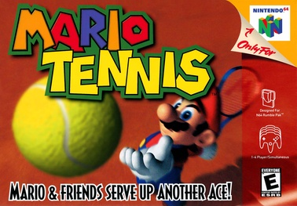

BLOQUE 2 · QUÉ ES UNA JOYA OCULTA
Tres criterios objetivos
METACRITIC 84+
La prensa los recomendó cuando salieron. No son guilty pleasures — son juegos objetivamente buenos.
HOY OLVIDADOS
Ninguno aparece en los rankings modernos de mejores N64. Eclipsados por contemporáneos del mismo género.
EN MI COLECCIÓN
Los diez están en los 58 cartuchos N64 de Koko. Esta lista es vivencial, no teórica.










CIERRE
El patrón de los 10
EL DATO
De los 10, 3 son de Rare (Blast Corps, Jet Force Gemini + otros eclipsados por Banjo y GoldenEye) y 6 son Nintendo first/second-party de deporte o racing. El patrón: juegos buenos nacen al lado del juego más grande del mismo estudio.
EL ARGUMENTO
La historia premia al primero, al más vendido, al más recordado. No al mejor ejecutado. Estos diez son el ejemplo: Metacritic 84+, en mi colección, y ninguno aparece hoy en listas modernas.
CHECKLIST · PRE-GRABACIÓN
Antes de prender cámaras
- ☐ Reunión con Koko — confirmar que los 10 le hacen sentido. Si quiere cambiar alguno, ajustar el HTML antes de grabar (slides modulares).
- ☐ Anécdotas personales — Koko prepara 15-20 seg por joya: ¿cuándo la jugó? ¿con quién? ¿qué le hizo a él?
- ☐ Setup — los 10 cartuchos físicos sobre la mesa. B-roll inicial: plano cenital de los 10 juntos.
- ☐ Audio — lavalier para ambos. Episodio conversacional, tono pedagógico-nostálgico.
- ☐ Ritmo — cronómetro visible. ~90 seg promedio por juego. Solo Blast Corps (#1) puede tomar 2 min (es el arquetipo del episodio).
- ☐ Tono — pedagógico, NO compensatorio. Evitar "deberían haber sido más famosos" — usar "fueron eclipsados por X".
- ☐ Cierre — memorizar la frase fija palabra por palabra. Es lo que la gente va a clipear.